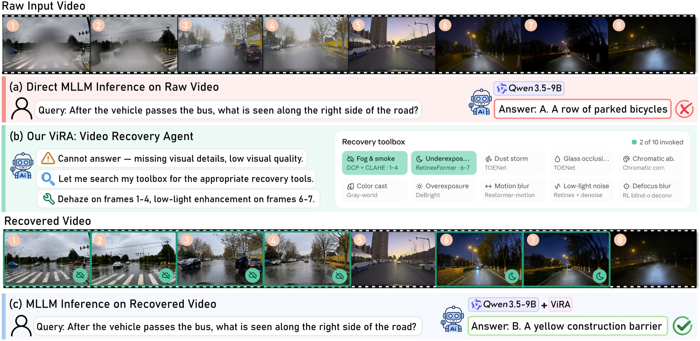

I'm an undergraduate at the University of Michigan. Models that look strong on clean benchmarks often fail quietly on the data people actually have: foggy dashcam video, noisy labels, a microscope plate nobody annotated. I like problems where the fix is a system that notices the input is bad and does something about it.
At a glance
papers, one as first author
of 4.0, three majors
Honors thesis, Sexton Lab
Reliable infection estimates from drug-screen microscopy.
local time
ML Researcher, TikTok
Multimodal LLM research, summer 2026.
Robust video understanding
Giving video MLLMs the ability to diagnose degraded evidence and restore it with tools before they answer.
↗Training signals that can't be gamed
RL post-training with verifiable rewards, distillation, and choosing the data a model is actually missing.
↗Machine learning for biology
Vision foundation models and careful statistics for drug-screen microscopy, where labels are scarce and noisy.
↗Papers & preprints

Project page ↗Oral · WACV 2027 LVR WorkshopUnder review · CVPR 2027
ViRA: Agentic Recovery for Robust Video Understanding under Corruption
Bryan Gao, Ce Zhang, Bojiang Jin, Weiguo Feng
A Video Recovery Agent that decides whether to restore a degraded video, which tool to call, and which frames to apply it to, before reasoning. It gains 3.0 points on average under corruption (up to 9.5) across four backbones, and still improves accuracy on clean video.
Under review · ICLR 2027
GRAFT: Growing Missing Knowledge through Topology-Guided Data Selection
X. Dai, B. Gao, C. Luo, Y. Zhang, et al.
A data-selection method for continual pretraining. It models what a language model already knows as layer-wise graphs of concept connections, then picks documents that link concepts the model has left isolated. Best average rank among the compared selection methods across ten benchmarks and three base models.
Research & industry
2025Aug — now
Sexton Lab, University of Michigan
Undergraduate Researcher · Data Science Honors Thesis
Scoring Astrovirus infection in a 384-well antiviral drug screen straight from microscope images, with a frozen vision foundation model in place of a hand-built, three-tool expert pipeline.
Virus-only controlTreatmentMock control
Hover the plate: 16 rows × 24 columns, 9 microscope fields per well.
- Matched the lab's incumbent pipeline with no feature engineering: leave-one-plate-out AUROC 0.988 vs. 0.996 on expert-labeled cells.
- Built the validation around the data's structure: plate- and field-level splits, a 1,000-shuffle permutation test, and per-plate consistency checks.
- Assay quality holds on unseen plates, with Z′-factors of 0.75–0.83.
- Now turning it into a point-and-click tool that takes a plate from raw images to a ranked hit list, piloting on a 15-plate screen with about 1.5M cells per plate.
Honors thesis: the statistics underneath
A virus-only control well still contains uninfected cells, so using wells as labels bakes in label noise. The thesis treats this as inference under weak supervision: modeling the label noise with a mixture model, estimating per-well infection prevalence with calibrated uncertainty, handling plate effects hierarchically, and making hit calling an error-controlled procedure.
2026May — Aug
TikTok
Machine Learning Researcher · Multimodal LLM Research · San Jose, CA
- ViRA. Conceived and led an agentic framework that puts visual restoration inside the reasoning loop of video MLLMs. Built the full robustness evaluation: 10 degradation types × 3 corruption regimes on Video-MME, STAR and NExT-QA across four models. Project page ↗
- RL post-training. Ran end-to-end reinforcement-learning post-training of vision-language models, with a fail-closed verifiable reward designed to prevent reward hacking on free-form outputs, and on-policy distillation to scale it to larger models.
- Data and benchmarks. Built a synthetic-data engine and a leak-resistant verification protocol for perception QA, so that every evaluation item depends on the video and has a single answer.
2025May — Aug
ByteDance
Data Scientist Intern · San Jose, CA
- Designed an explainable churn-attribution pipeline for advertisers, combining tiered rules with Shapley-value decomposition across overlapping drivers, over three years of daily data.
- Rebuilt an ad-inventory forecasting model with clear baselines and error targets, correcting a systematic underprediction.
2024Sep — Jan
BOMIE
Marketing Data Analyst · New York, NY
- Time-series analysis of sales trends and customer segmentation with clustering, in R and Tableau.
University of Michigan
B.S. in Computer Science, Data Science, and Mathematics
- University Honors
- James B. Angell Scholar
- William J. Branstrom Freshman Prize
- Languages
- Python · C++ · SQL · R · JavaScript
- Modeling
- PyTorch · Hugging Face · LoRA / SFT · GRPO · constrained decoding · scikit-learn
- Training & serving
- Megatron-LM · SGLang · vLLM · multi-GPU training
- Data
- Pandas · Spark · Prophet · Tableau
Say hello.
I'm always glad to hear from people working on multimodal models, robustness, or ML for science.